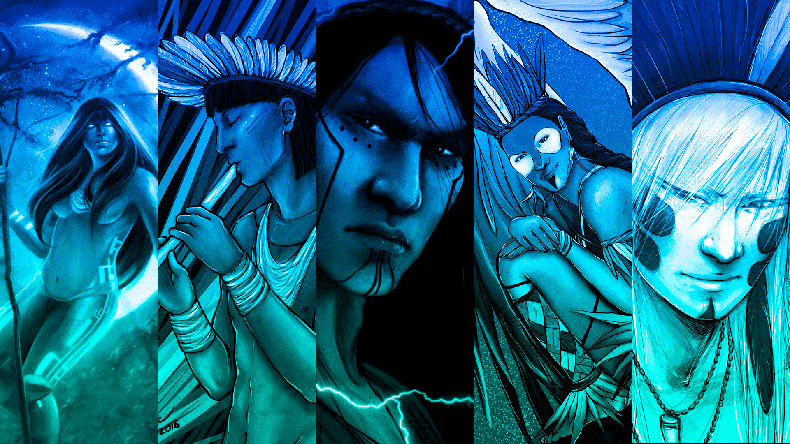

Resumo da mitologia Brasileira
A mitologia brasileira é um rico conjunto de histórias, lendas e crenças que refletem a diversidade cultural e étnica do Brasil. Ela é uma fusão de influências indígenas, africanas e europeias, formando uma tapeçaria única de narrativas que exploram a relação entre humanos, natureza e espiritualidade. A mitologia brasileira é caracterizada por uma variedade de seres míticos e elementos sobrenaturais, que muitas vezes personificam forças naturais e sociais. Principais Características da Mitologia Brasileira:
-
Seres Sobrenaturais: A mitologia brasileira é povoada por uma grande variedade de seres sobrenaturais, como o Curupira, protetor das florestas, com seus pés voltados para trás para confundir caçadores; o Saci-Pererê, um travesso menino de uma perna só que vive nas matas; a Iara, uma sedutora sereia dos rios; e muitos outros.
-
Influências Culturais: A mitologia brasileira é fortemente influenciada pela cultura dos povos indígenas nativos, pelos africanos trazidos como escravos e pelos colonizadores europeus. Essa fusão resultou em uma rica variedade de mitos que ecoam as tradições e as visões de mundo dessas diferentes culturas.
-
Relação com a Natureza: Muitos mitos brasileiros estão profundamente enraizados na conexão entre humanos e a natureza. Os seres míticos frequentemente personificam elementos naturais, como rios, florestas e animais, destacando a importância desses elementos na vida cotidiana e nas crenças das pessoas.
-
Transmissão Oral: Grande parte da mitologia brasileira foi transmitida oralmente ao longo das gerações, o que permitiu a adaptação e a evolução das histórias ao longo do tempo. Essa tradição oral contribuiu para a riqueza e a diversidade da mitologia.
-
Sincretismo Religioso: O Brasil é conhecido por seu sincretismo religioso, onde elementos de diferentes sistemas de crenças são mesclados. Isso também se reflete na mitologia, com sobreposições de divindades africanas, indígenas e europeias.
-
Cultura Popular: A mitologia brasileira é uma parte integrante da cultura popular do país. Essas histórias são frequentemente compartilhadas em festas, celebrações, músicas, danças e artesanato, ajudando a preservar e enriquecer a herança cultural brasileira.